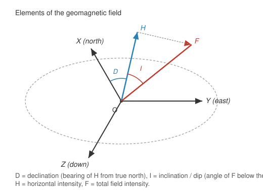

World Magnetic Model (WMM)
| This documentation was generated with the assistance of AI. Please report any inaccuracies. |
The com.irurueta.navigation.inertial.wmm package estimates the Earth’s magnetic flux density at a
given position and date, using the U.S./U.K. World Magnetic Model
(WMM) — see [wmm-site]. It is used both as an independent heading
reference (see AttitudeEstimator) and as an input to magnetometer
calibration (see IMU Calibration).
|
This library bundles a default WMM coefficient file ( |
What the WMM provides
At any given latitude, longitude, height, and date, the Earth’s magnetic field can be described by three independent quantities:
| Element | Meaning |
|---|---|
Magnitude (intensity) |
Total field strength, roughly 30 microtesla (µT) at the equator up to about 60 µT near the poles. |
Declination |
The bearing of the magnetic field from true north — the angle a compass needle’s reading must be corrected by to get true heading. |
Dip (inclination) |
The angle the field makes below the local horizontal plane — essentially the "magnetic latitude," typically within about 10° of the geodetic latitude. |

Declination is the only one of the three needed to convert a magnetometer heading measurement into true
heading (see AttitudeEstimator). It is not constant: it drifts slowly
over years (secular variation) and varies significantly with location, which is why a global model like
the WMM — rather than a single fixed value — is needed.
Classes
| Class | Role |
|---|---|
|
Holds the loaded Gauss coefficients (main field + secular variation) and derived normalization factors for one 5-year WMM release. |
|
Parses a WMM coefficient file ( |
|
Evaluates the spherical-harmonic model at a given position/date to get declination, dip, intensity, and the full NED magnetic flux density vector. This is the actual WMM algorithm. |
|
A much simpler helper: builds a NED magnetic flux density vector directly from an already-known magnitude/declination/dip (e.g. supplied by the caller, without needing the full WMM coefficient set). |
|
Data container for magnetic flux density resolved about north, east, down axes. |
Where to go next
-
The Spherical Harmonic Model — the coefficient file format and the spherical-harmonic algorithm.
-
Earth Magnetic Flux Density Container and Simple Estimator — the simpler magnitude/declination/dip container classes.
-
Attitude Estimators: Leveling, Gyrocompassing, and Magnetic Heading — how declination and dip feed into heading estimation.
-
reference.adoc#bibliography — bibliography.